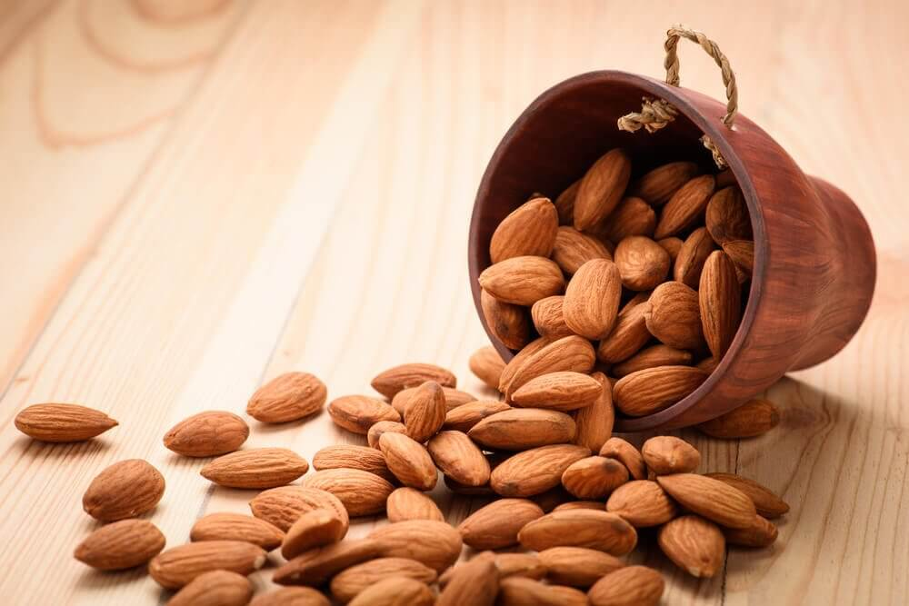

아몬드(ALMOND)
아몬드는 장미목 장미과 벚나무속에 속한 중동 원산의 식물이다. 쌍떡잎 식물이며 과육 껍질에는 주름이 잡혀 있다. 나무에서 나는 씨앗이 대개 사람들이 알고 있는 아몬드로 대개는 도토리와 같은 견과류로 생각하지만 사실은 복숭아나 자두 같은 핵과에 해당한다.아몬드 나무는 낙엽수이며 4-10m로 자란다. 줄기는 대개 직경 30cm로 자라며 어린 싹이 먼저 나고 햇빛을 받으면서 자줏빛을 띤다. 2년째가 되면 회색이 된다. 잎은 1.2-4cm 정도로 자라며 꽃은 흰색이나 옅은 분홍색으로 5개의 잎이 나는 3–5cm 크기다.

(아몬드 이미지)
(아몬드 이미지)
아몬드의 효능
1. 아몬드는 콜레스테롤 수치를 낮춘다 아몬드는 콜레스테롤 수치를 안정화시킨다.2. 아몬드는 심장질환 예방에 도움이 된다.
3. 장내 미생물군이 훨씬 더 건강해진다. 4. 늘씬함을 유지하는 데 도움이 된다.
5. 아몬드는 피부에도 좋다.
6. 머리카락이 건강해진다.
7. 두뇌 작업을 돕는다.
8. 치아 건강에 좋다.